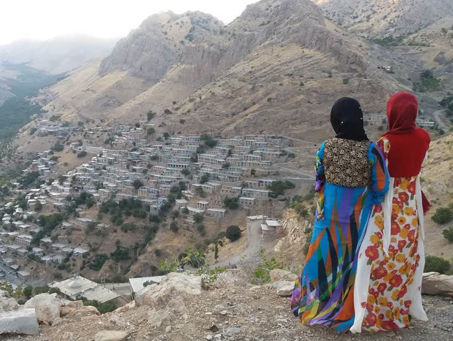
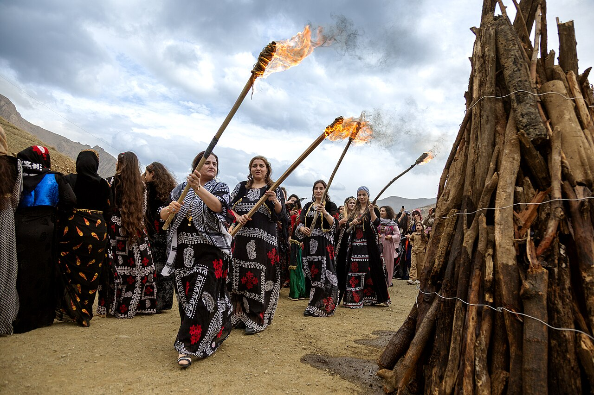

Kapak — Fotoğraf: Farbod Bavehie · CC BY-SA 4.0 · Kaynaklar
Kapak — Fotoğraf: Farbod Bavehie · CC BY-SA 4.0 · Kaynaklar
Kürt kültürünün en tanınan giysilerinden biri olan kirasfistan, düğünlerden bayramlara, kına gecelerinden aile buluşmalarına kadar pek çok özel günün vazgeçilmez kıyafetidir. Parlak kumaşları, zengin renkleri ve ince işlemeleriyle nesilden nesile aktarılan bu giyim geleneği, günümüzde de canlılığını korumaktadır. Bu rehberde kirasfistanın ne olduğunu, hangi parçalardan oluştuğunu, yöreden yöreye nasıl değiştiğini ve ilk kez alacakların nelere dikkat etmesi gerektiğini adım adım ele alıyoruz.
Kirasfistan Nedir?
Kirasfistan, Kürtçede iç elbise anlamına gelen kiras ile üste giyilen elbiseyi ifade eden fistan sözcüklerinin birleşiminden oluşur. Genel kabul, kirasfistanın tek bir elbise değil; iç entari, üst elbise ve bele bağlanan kuşaktan oluşan bir takım olduğu yönündedir. Yere kadar uzanan bol kesimi, uzun kolları ve kat kat görünümüyle hem zarif hem de hareket özgürlüğü tanıyan bir giysidir. Yörelere göre model, renk ve işleme ayrıntıları değişse de takımın temel kurgusu büyük ölçüde ortaktır.
Kirasfistanın Parçaları
Kiras: İçte Giyilen Uzun Entari
Kiras, takımın temelini oluşturan uzun iç elbisedir. Genellikle düz veya desenli kumaştan dikilir, boydan kesimlidir ve kolları uzundur. Bazı modellerde kol uçları uzatılarak bileğe sarılan ya da serbest bırakılan uzantılar bulunur; bu ayrıntı yöreden yöreye farklı adlarla anılır ve takıma hareketli bir görünüm kazandırır.
Fistan: Üste Giyilen Elbise
Fistan, kirasın üzerine giyilen ve takımın asıl gösterişli katmanını oluşturan parçadır. Önü açık yelek benzeri modellerden boydan elbise formuna kadar farklı biçimleri vardır. İşlemeler, pul ve sim detayları çoğunlukla fistan üzerinde yoğunlaşır; bu nedenle takımın karakterini büyük ölçüde fistan belirler.
Şûtik: Bel Kuşağı
Şûtik, belin üzerine sarılan kumaş kuşaktır. Takımı toparlar, silüeti belirginleştirir ve renk uyumunu tamamlar. Düğünlerde parlak ve işlemeli şûtikler tercih edilirken gündelik kullanımda daha sade örnekler yaygındır. Kuşağın bağlanış biçimi de yöresel alışkanlıklara göre değişebilir. Şûtik ve benzeri tamamlayıcılar hakkında ayrıntılı bilgiye aksesuar sayfamızdan ulaşabilirsiniz.
Kirasfistanda Kullanılan Kumaş Türleri
Kumaş seçimi, kirasfistanın hem görünümünü hem de kullanım konforunu doğrudan etkiler. En sık tercih edilen kumaşlar şunlardır:
- Kadife: Kışlık düğünler ve serin bölgeler için idealdir. Ağır ve dökümlü duruşuyla resmî bir hava katar; koyu renklerde özellikle etkileyicidir.
- Saten: Parlak yüzeyiyle ışığı yansıtır; düğün ve nişan gibi gece davetlerinde sık tercih edilir. Hafifliği sayesinde uzun süre rahat taşınır.
- Payetli kumaş: Üzerindeki pullarla en gösterişli seçenektir. Kına ve düğün gecelerinde öne çıkmak isteyenler için uygundur; ancak dikiş ve astar kalitesine dikkat edilmelidir.
- Şifon: İnce, hafif ve uçuşan yapısıyla yazlık davetler ve halay için elverişlidir. Genellikle astarlı dikilir; kat kat kullanımıyla zarif bir görünüm sunar.
Yöreye Göre Renk ve İşleme Farkları
Kirasfistan tek tip bir giysi değildir; her yöre kendi zevkini ve geleneğini kıyafete yansıtır. Aşağıdaki ayrımlar genel eğilimleri gösterir; aynı yöre içinde bile aileden aileye farklılıklar görülebilir.
Botan Yöresi
Botan çevresinde daha koyu ve derin renklerin yanı sıra ağırbaşlı işlemelerin tercih edildiği aktarılır. Kadife üzerine sim işleme bu yörede sık görülen bir bileşimdir.
Serhat Yöresi
Serhat bölgesinde canlı renkler ve katmanlı giyim öne çıkar. Soğuk iklim nedeniyle kalın kumaşlar yaygındır; renk paletinde kırmızı ve bordo tonlarının önemli bir yeri olduğu kabul edilir.
Mardin Yöresi
Mardin ve çevresinde telkâri ile gümüş takı geleneğinin de etkisiyle kıyafetlerin takılarla birlikte düşünüldüğü görülür. Daha açık ve pastel tonların yanı sıra ince işlemeli kumaşlar bu yörede sevilir.
Hakkari Yöresi
Hakkari yöresinde çok renkli ve desenli kumaşların bir arada kullanıldığı, kuşak ve başlık gibi tamamlayıcıların özellikle önemsendiği aktarılır. Takımın bütünündeki renk zenginliği bu yörenin ayırt edici özelliği sayılır.
İlk Kez Alacaklar İçin Beden ve Renk Seçimi
İlk kirasfistanını alacaklar için birkaç temel öneri süreci kolaylaştırır:
- Beden seçiminde bolluğu hesaba katın: Kirasfistan bol kesimli bir giysidir; yine de omuz ve kol boyunun doğru oturması gerekir. Günlük giydiğiniz bedeni esas alın, boy uzunluğunu ayrıca kontrol edin.
- Boy ölçünüzü mutlaka verin: Elbisenin yere değmeden dökülmesi hem şıklık hem de halay sırasında güvenlik açısından önemlidir.
- Davetin türüne göre renk seçin: Kına gecelerinde kırmızı ve bordo tonları geleneksel kabul edilir; düğünlerde ise davetliler için parlak fakat gelinle yarışmayan renkleri tercih etmek inceliktir.
- Ten renginizi ve takılarınızı düşünün: Altın tonlu takılarla sıcak renkler, gümüş takılarla soğuk renkler daha uyumlu sonuç verir.
- Kumaşı mevsime göre belirleyin: Yazın şifon ve saten, kışın kadife daha konforludur.
Sonuç: Doğru Kirasfistan Nasıl Bulunur?
Kirasfistan; kiras, fistan ve şûtikten oluşan, kumaşı ve işlemesiyle yöresine göre şekillenen köklü bir giyim geleneğidir. Model ve renk seçerken davetin türünü, mevsimi ve kendi ölçülerinizi birlikte değerlendirmeniz yeterlidir. Koleksiyonu incelemek için kirasfistan sayfamıza göz atabilir, erkek giyimini merak ediyorsanız şal û şepik rehberimizi okuyabilir, aklınıza takılan diğer sorular için sık sorulan sorular bölümünü ziyaret edebilirsiniz.
Kültürden Kareler

